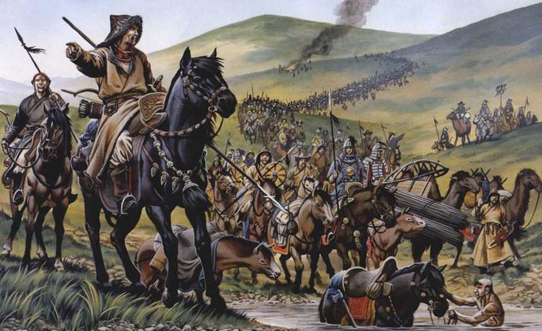

Early settlements along the Yellow River developed farming, pottery, and communal villages. These foundations shaped the earliest forms of Chinese culture, technology, and social organization. Tradition places the Xia as China’s first dynasty, followed by the Shang with its advanced bronze work and the Zhou, who introduced the Mandate of Heaven as a guiding political principle.China’s Bronze Age produced sophisticated ritual vessels, weapons, and tools. These artworks reveal a society with skilled craftsmanship and complex ceremonial traditions.The earliest Chinese writing emerged as pictographs carved into turtle shells, bones, and bronze. Over time, these symbols evolved into the characters still used today.Oracle bones were used in Shang Dynasty divination rituals. Questions about weather, warfare, and royal affairs were inscribed and heated, and the resulting cracks were interpreted as messages from ancestors.
Classical Period
Confucius taught the importance of virtue, order, and respectful relationships. His ideas became the foundation of Chinese governance, education, and moral philosophy for thousands of years. During the Spring and Autumn and Warring States eras, thinkers debated how to achieve order and prosperity. Competing schools like the Confucian, Daoist, Legalist, and many other, shaped China’s intellectual legacy.The Qin unified China for the first time, standardizing laws, writing, currency, and measurements. Though short-lived, their reforms laid the groundwork for future dynasties.Early sections of the Great Wall were built by the Qin to protect against northern nomadic groups. Later dynasties expanded and reinforced these defensive barriers.Under the Han, China experienced economic growth, imperial expansion, and major innovations such as paper-making. This era became a model for future dynasties.
Three Kingdoms
After the fall of the Han, China fractured into the rival states of Wei, Shu, and Wu. This dramatic era is remembered for its legendary generals, battles, and political intrigue. The Sui reunified China after centuries of division and began the Grand Canal, a massive engineering project linking northern and southern China.The Tang Dynasty ushered in a vibrant age of trade, art, and poetry. Chang’an became one of the world’s most multicultural and prosperous cities.The Song era saw major advances in printing, navigation, mathematics, and agriculture. Its thriving urban culture helped shape China’s early modern identity.From Tang poets like Li Bai to Song painters and scholars, this long period produced some of China’s most beloved artistic masterpieces.
Conquest Dynasties

The Mongols united China under the Yuan Dynasty, encouraging trade across Eurasia. Their rule brought new cultural exchanges and technologies. During the Ming Dynasty, Admiral Zheng He led vast fleets across the Indian Ocean, projecting Chinese influence from Southeast Asia to East Africa.The Ming strengthened the Great Wall into the form seen today and built Beijing as an imperial capital centered on the grand Forbidden City.The Manchu established the Qing Dynasty, expanding China’s borders and blending their traditions with established Chinese governance.At its height, the Qing presided over a culturally rich and diverse empire. Scholarship, art, and everyday life thrived under a stable social system.
Modern China
Foreign pressure and the Opium Wars forced China to open treaty ports, marking the beginning of a turbulent era of internal and external crises. Widespread unrest and reform movements led to the end of imperial rule. The 1911 Revolution established the Republic of China.The early republic struggled with warlord divisions, foreign influence, and competing political movements, shaping China’s modern transformation.Founded in 1949, the PRC embarked on sweeping social and economic changes. Its development continues to define contemporary Chinese society.Economic reforms beginning in the late 20th century brought rapid modernization. Today, China is a major global cultural and economic presence.